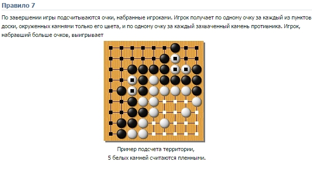
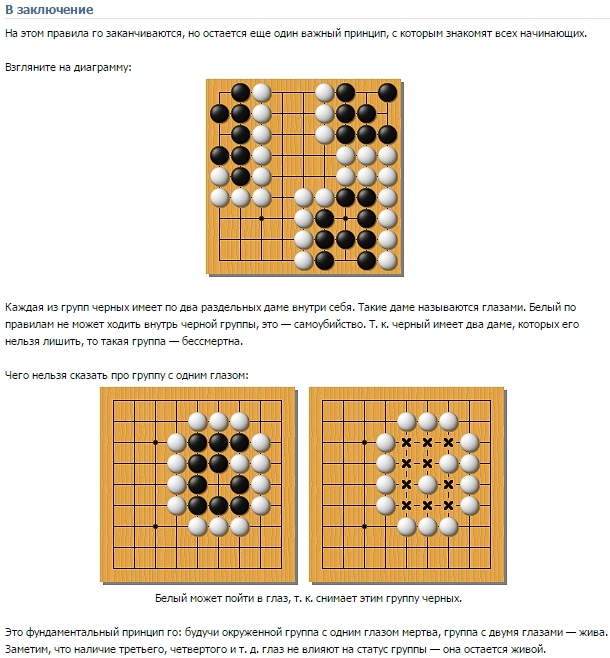

At the end of the rules, but there is another important
principle, which introduces all beginners.
Take a look at the chart:

Each group has a black two separate dame inside.
Such a dame called eyes. White by the rules can not walk
into the black group is - suicide, since then black has two dame,
which it is impossible to capture, that such a group - immortal.
What can be said about a group with one eye:

White can go to the eye, because it takes a group of black.
This is a fundamental principle of Go: being surrounded by
a group with one eye is dead, the group with two eyes - alive.
Note that the presence of the third, fourth and so on eye does
not affect the status of the group - it remains alive.